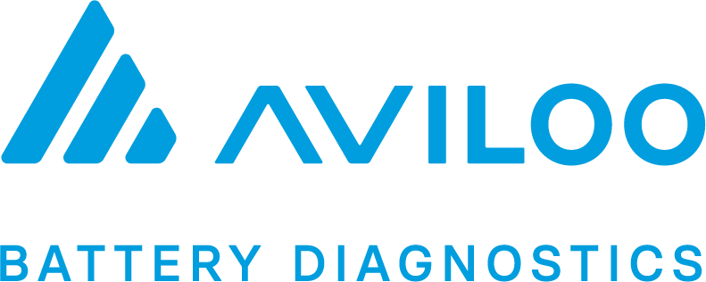
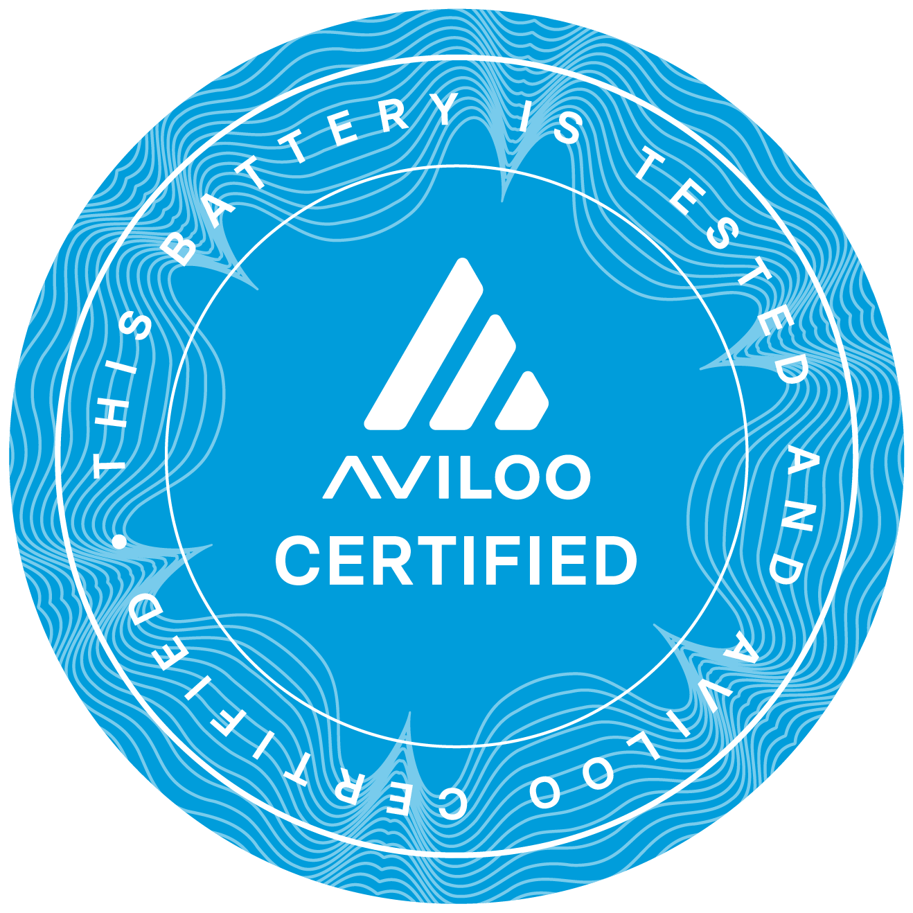
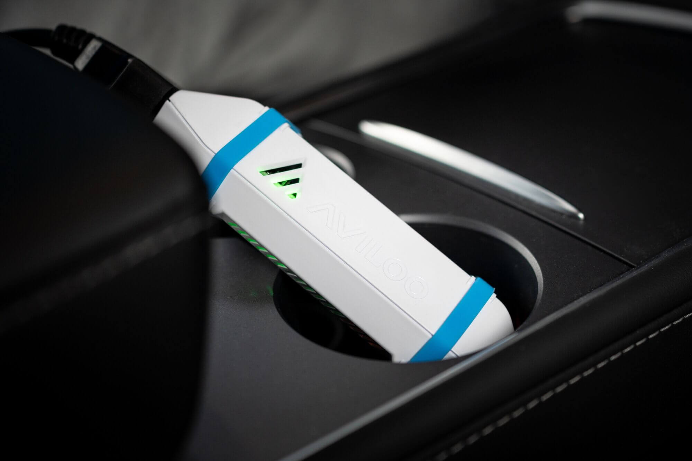
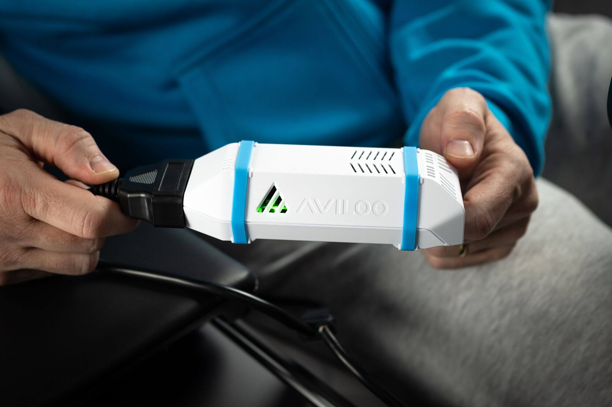
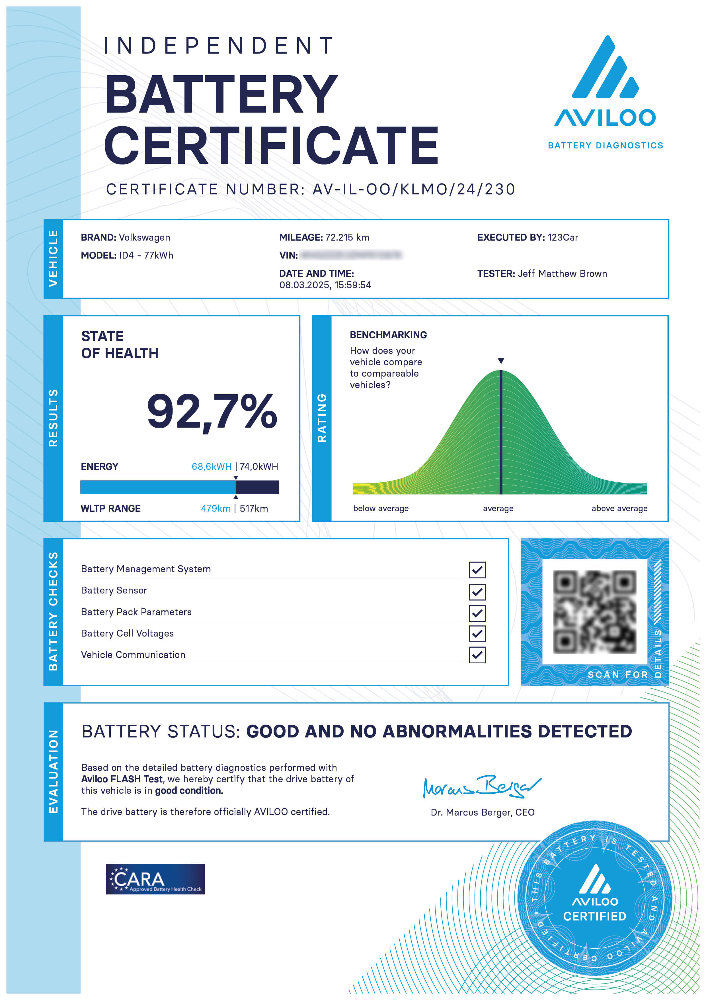

ONAFHANKELIJK · TÜV-GECERTIFICEERD
EV AccuCheck op locatie —
AVILOO Flash Test op celniveau
Onafhankelijke meting op celniveau, inclusief AVILOO batterijgarantie tot €3.000.
Plan AccuCheck €129EV ACCUCHECK
Kies de variant die bij u past
Dezelfde onafhankelijke meting, TÜV-gecertificeerd, accucertificaat inbegrepen. Het verschil zit alleen in de locatie.
AVILOO batterijgarantie tot €3.000 inbegrepen
Bij elke AVILOO Flash Test zit een batterijgarantie inbegrepen, wanneer het voertuig aan de voorwaarden voldoet. De garantie wordt verstrekt door AVILOO.
Op locatie
AccuCheck bij de auto
Ik kom naar de auto toe. Ideaal vóór aankoop, als de auto bij de verkoper staat.
Inclusief btw · Meting op locatie · Certificaat inbegrepen
Binnen 40 km rondom Barendrecht inbegrepen, daarna €0,40 per km · Vaak dezelfde dag of volgende dag beschikbaar
- Ik kom naar de auto toe
- Objectieve accumeting (State of Health)
- Indicatie van praktisch rijbereik
- TÜV-gecertificeerde diagnoseapparatuur
- Digitaal accucertificaat na uitvoering
- AVILOO batterijgarantie tot €3.000 inbegrepen
In Barendrecht
AccuCheck in Barendrecht
U brengt de auto langs. Ideaal als u de auto al heeft en zekerheid wilt achteraf.
Inclusief btw · U rijdt naar Barendrecht · Certificaat inbegrepen
Regio Rotterdam/Dordrecht, direct aan de A15/A29
- U rijdt naar Barendrecht
- Objectieve accumeting (State of Health)
- Indicatie van praktisch rijbereik
- TÜV-gecertificeerde diagnoseapparatuur
- Digitaal accucertificaat na uitvoering
- AVILOO batterijgarantie tot €3.000 inbegrepen
Uitbreiding op de AccuCheck
AccuZeker Pakket: de meting mét duiding
De AccuCheck geeft u het getal. Het AccuZeker Pakket voegt daar een heldere uitleg van de uitkomst, een vergelijking met soortgelijke voertuigen en wat de gemeten degradatie in de praktijk voor u betekent aan toe. Zelfde meting, zelfde garantie, meer begrip.
- ✓ Alles uit de AccuCheck, inclusief AVILOO batterijgarantie tot €3.000
- ✓ Uitgebreide uitleg van de uitkomst
- ✓ Marktvergelijking met soortgelijke voertuigen
- ✓ Uitleg accudegradatie: wat het is en wat u ervan merkt
Niet zeker welke variant u nodig heeft? Neem contact op, we helpen u kiezen.
Meerdere voertuigen
Familie, vrienden of collega's ook een EV?
Plant u 2 of meer AccuChecks op dezelfde dag? Dan betaalt u voor elke meting na de eerste het Barendrecht-tarief van €95 in plaats van €129. Vanaf 5 metingen op één dag geldt €95 voor alle metingen. ZekerOpWeg is toch al onderweg.
€129
1e meting
€95
2e en volgende metingen
€95
Alle metingen vanaf 5
Stuur alle kentekens via WhatsApp en vraag naar de dagdeal: 06 23452349
Om onafhankelijkheid en zorgvuldigheid te waarborgen voeren wij slechts een beperkt aantal AccuChecks per dag uit.
De AVILOO batterijgarantie wordt verstrekt door AVILOO en is onderdeel van de AVILOO Flash Test. Voorwaarden, geldigheid en dekking tot €3.000 zijn afhankelijk van voertuig, testresultaat en de voorwaarden van AVILOO.
Batterijwaarde zichtbaar gemaakt door ZekerOpWeg
De AccuCheck wordt persoonlijk uitgevoerd door Pepijn Westhoff. Volledig onafhankelijk en uitsluitend in opdracht van de koper. De meting geeft objectieve accutransparantie vóór aankoop.
Na elke AVILOO Flash Test ontvangt u een officieel AVILOO-certificaat met celanalyse en heldere uitleg van wat de uitkomst betekent voor uw specifieke auto.
Wilt u het complete plaatje? Voeg objectief aankoopadvies toe vanaf €99. Pepijn controleert dan ook:
- Schade en schadehistorie
- Staat van banden en remmen
- Algemene staat interieur en exterieur
- Onderhoudshistorie volledig aanwezig
Zijn de banden versleten of de remmen aan vervanging toe? Dan is dat direct een onderbouwd punt voor onderhandeling. U koopt met zekerheid en voorkomt onverwachte kosten in het eerste jaar.

Pepijn Westhoff
EV accudiagnose · 16 jaar automotive ervaring


Officieel AVILOO-partner
ZekerOpWeg voert de officiële AVILOO Flash Test uit
Als officieel AVILOO-partner voert ZekerOpWeg TÜV-gecertificeerde AVILOO Flash Tests uit op locatie in een straal van 40 kilometer rondom Barendrecht. Rotterdam, Dordrecht, Schiedam, Ridderkerk, Capelle aan den IJssel, Spijkenisse, Vlaardingen en omgeving. Na elke meting ontvangt u een officieel AVILOO-certificaat met celanalyse en SoH-score.
TÜV-gecertificeerd
Meetmethodiek
AVILOO partner
Officieel gecertificeerd
BOVAG aanbevolen
Testmethode
Ervaringen van klanten
Wat klanten zeggen over ZekerOpWeg
★★★★★ 5,0 op basis van 7 Google reviews
"Vandaag een SoH-meting laten uitvoeren aan mijn ID.3 op locatie. Erg fijne ervaring. Meneer kwam zeer deskundig over, nam de tijd voor uitleg. De meting en uitleg hebben mij echt goed geholpen."
MikBerr Kaya
AVILOO Flash Test ID.3 · via Google
"Vandaag een AVILOO test op locatie laten doen. Snelle service, 's ochtends contact, met middaguur de uitslag. Test goed uitgevoerd en rapport netjes uitgelegd."
Werner Branderhorst
AVILOO Flash Test op locatie · via Google
"Ik heb via ZekerOpWeg mijn hybride accu laten testen en ben erg tevreden. Ik kreeg een duidelijk rapport met de SOH-waarde en het elektrische rijbereik, inclusief TÜV-certificaat. Alles was professioneel en snel geregeld."
Elder Silva
Hybride accutest · via Google
"Top job. Quick, communicative and professional. Been waiting to get the SOH for your vehicle but don't know where to find it."
Harrison W
AVILOO Flash Test op locatie · via Google
"Onafhankelijk, duidelijk en transparant. Pepijn was doortastend en veel uitgelegd. Dat geeft kopers én verkopers een goed gevoel in de 2e hands EV markt."
Circular Clarity
EV AccuCheck · via Google
AVILOO FLASH TEST OP LOCATIE
Veelgevraagde modellen die ZekerOpWeg meet
ZekerOpWeg voert AVILOO Flash Tests uit op de volgende modellen, op locatie in Rotterdam, Barendrecht, Dordrecht, Ridderkerk, Schiedam, Capelle aan den IJssel en omgeving.

Volkswagen ID.3
45 kWh · 58 kWh · 77 kWh
Volkswagen ID.4
52 kWh · 77 kWh · GTX
Audi Q4 e-tron
45 · 50 · Sportback
Peugeot e-208
50 kWh · 2020 en later
Tesla Model 3
Standard · Long Range · Performance
Skoda Enyaq iV
60 · 80 · RS · Coupé
Hyundai Ioniq 5
58 kWh · 77 kWh · AWD
Renault Zoe
22 kWh · 41 kWh · 52 kWh
Nissan Leaf
24 kWh · 40 kWh · 62 kWh
BMW iX3 · i4 · iX
Alle beschikbare varianten
Kia EV6 · Niro EV
58 kWh · 77 kWh
Ander model?
Neem contact op. In de meeste gevallen is meting mogelijk.
Staat uw model er niet bij? Neem contact op voor beschikbaarheid.
De accu bepaalt de waarde van een EV. ZekerOpWeg maakt die zichtbaar. Onafhankelijk. Gecertificeerd. Zonder verkoopbelang.
Waarom een AccuCheck vóór aankoop belangrijk is
De accu is het duurste onderdeel van een EV. Vervanging kan €8.000 tot €20.000 kosten.
De conditie van de accu bepaalt het rijbereik, de restwaarde en het financiële risico bij aankoop.
- Accugezondheid beïnvloedt restwaarde
- Degradatie is niet zichtbaar tijdens een proefrit
- Accustatus bepaalt toekomstig rijbereik
- Objectieve meting voorkomt discussies achteraf

Ga je op pad? Niet zonder dit rapport.
Wie goed voorbereid een EV of hybride gaat bekijken, maakt een betere beslissing. Het AccuRisico Rapport geeft je alles wat je nodig hebt voordat je de deur uitgaat: inzicht in het model, het risico, de cijfers en wat je tijdens de proefrit moet controleren.
Je leert hoe snel de accu van dit specifieke model veroudert en wat dat betekent voor rijbereik en restwaarde.
Het rapport legt uit wat het verschil is tussen hybride en volledig elektrisch, en welke aandrijving bij jouw gebruik past.
Niet elke meter of opgave klopt. Je leert welke cijfers betrouwbaar zijn en welke je met een korrel zout moet nemen.
Wat let je op tijdens de rit? Het rapport geeft je een praktische checklist zodat je niets mist op het moment dat het telt.
Op basis van het voertuigprofiel krijg je een helder beeld: wat zijn de risico's, wat zijn de aandachtspunten, en waar sta je sterk in onderhandeling.
Het rapport is uitsluitend in jouw belang. Geen dealer, geen verkoper, geen provisie.
Hoe de AccuCheck verloopt

1 Aansluiten en identificeren (~2 min)De AVILOO Box maakt via de OBD-poort verbinding met de auto. Het systeem leest het chassisnummer en identificeert de aanwezige accu. Geen demontage. Geen ingreep.
De AVILOO Box voert de Flash Test uit en meet alle individuele cellen. Na afronding maakt het systeem automatisch verbinding met AVILOO in Oostenrijk en wordt het certificaat gegenereerd.

3 Uitkomst ter plaatse besprokenDe uitkomst wordt direct met u doorgenomen. U begrijpt wat de SoH-score betekent voor uw specifieke auto en aankoop.
Na betaling ter plaatse ontvangt u direct het officiële AVILOO-certificaat digitaal, inclusief de AVILOO batterijgarantie wanneer het voertuig aan de voorwaarden voldoet. Alles is geregeld voordat u vertrekt.
Kopen, onderhandelen of doorzoeken
Een onafhankelijke AccuCheck geeft duidelijkheid vóór aankoop. De uitkomst helpt u een rationele beslissing nemen.
De accustatus is gezond en het voertuig presteert zoals verwacht. U koopt met vertrouwen.
Afwijkingen in accugezondheid kunnen invloed hebben op de waarde. Objectieve data versterkt uw onderhandelingspositie.
Wanneer de accustatus risico's toont kunt u beter verder kijken voordat u duizenden euro's uitgeeft.
Wanneer is een AccuCheck zinvol?
Bij elektrische auto's bepaalt de aandrijfaccu een groot deel van de waarde. Juist bij een gebruikte EV kan een onafhankelijke accutest veel onzekerheid wegnemen.
Wanneer u een elektrische auto overweegt, maar geen zekerheid heeft over de werkelijke conditie van de accu.
Wanneer het praktijkbereik afwijkt van verwachting of wanneer de auto intensief is gebruikt.
Objectieve accudata kan een sterke basis vormen voor prijsonderhandeling of aanvullende garanties.
Een onafhankelijke meting kan helpen vaststellen of de accustatus nog binnen de garantievoorwaarden valt.
Accucertificaat na uitvoering
Na de meting ontvangt u dezelfde dag een digitaal AVILOO-certificaat. Ondertekend door Dr. Marcus Berger (CEO AVILOO) en goedgekeurd door CARA. Geldig bij garantieclaims en wederverkoop.
Ieder certificaat is ondertekend door Dr. Marcus Berger (CEO AVILOO GmbH) en goedgekeurd door CARA. Het certificaat is rechtsgeldig als bewijs bij verzekeringsclaims, garantiekwesties en bij wederverkoop van het voertuig.
Wat u concreet ontvangt
De meting geeft inzicht in de werkelijke accugezondheid en een indicatie van het praktische rijbereik op basis van de actuele accustatus.
De meting wordt uitgevoerd met TÜV-gecertificeerde diagnoseapparatuur.
U ontvangt een rapport met de gemeten accustatus en duidelijke toelichting.
Helpt bepalen of u het voertuig koopt, onderhandelt of beter verder zoekt.
Veelgestelde vragen over de AVILOO Flash Test
Is ZekerOpWeg een officieel AVILOO-partner?
Ja. ZekerOpWeg is officieel AVILOO-partner in de regio Rotterdam, Barendrecht, Dordrecht en omgeving. De AVILOO Flash Test wordt uitgevoerd met gecertificeerde AVILOO-apparatuur. Na elke meting ontvangt u een officieel AVILOO-certificaat.
Wat is het verschil tussen een AVILOO Flash Test en een BMS-uitlezing?
Een BMS-uitlezing leest wat de auto zelf berekent. De AVILOO Flash Test meet de spanning van elke individuele cel onafhankelijk. Een BMS kan een defecte cel missen. De AVILOO Flash Test detecteert afwijkingen op celniveau die een BMS-uitlezing niet ziet.
Wat kost een AVILOO Flash Test bij ZekerOpWeg?
Een AVILOO Flash Test op locatie kost €129 inclusief btw. ZekerOpWeg komt naar de auto toe binnen 40 kilometer rondom Barendrecht. Rijdt u naar Barendrecht, dan is de prijs €95. Beide varianten zijn inclusief officieel AVILOO-certificaat met celanalyse.
Kennisartikelen